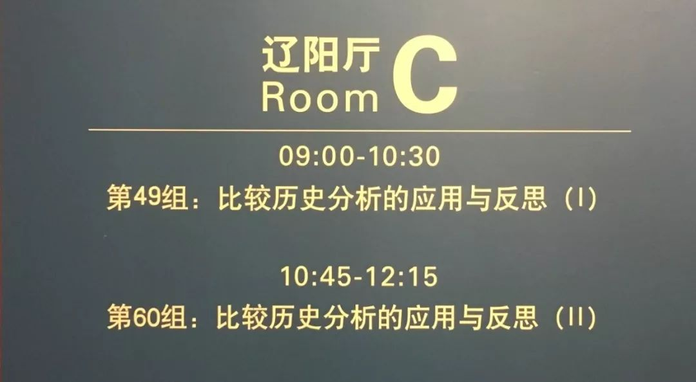
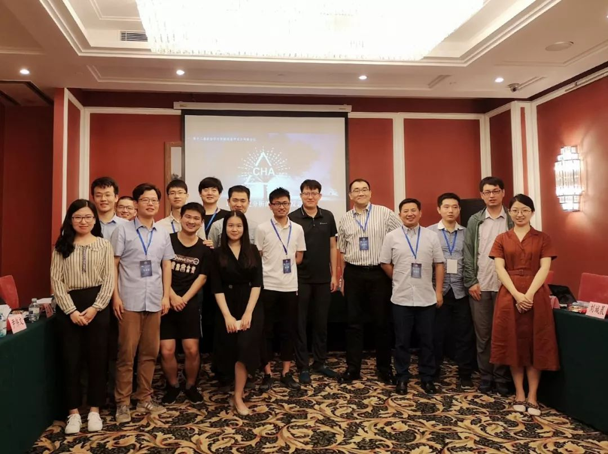
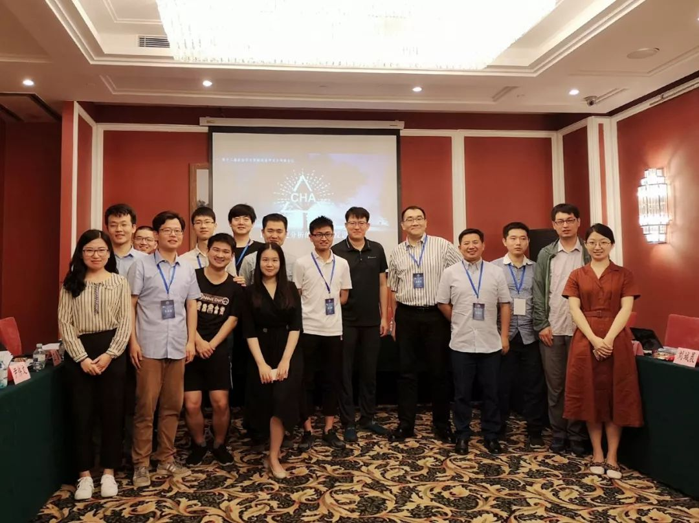

收录于合集
2019年7月11日，云销雨霁，彩彻区明，“比较历史分析的应用与反思”专题讨论迎来了第二个年头。
按照发言顺序，参加讨论的分别是复旦大学国际关系与公共事务学院的朱杰进老师、上海交通大学国际与公共事务学院的黄宗昊老师、安徽大学社会与政治学院的刘城晨老师、同济大学政治与国际关系学院的叶成城老师、吉林大学行政学院的王慧同学、美国德克萨斯州农工大学政治学系的尹伟文同学、上海交通大学国际与公共事务学院的王健同学和中国人民大学国际关系学院的杨端程同学，评论人是来自吉林大学行政学院的马雪松老师。与往年一样，今年的比较历史学术共同体，一如既往地保持了它的开放、多元与包容。

比较历史分析自诞生之日起就关注社会科学研究中的“第一类问题”（first-order questions），这些问题源自社会生活本身反复出现的、一直存在的紧张状态和混乱关系，同时对这些问题的关注状况也构成了评判学科发展进步的重要标准。在上半场，几位老师思考的是国际秩序与制度的起源与发展：朱杰进老师确立了“叠加”、“偏离”、“转换”三种替代型制度变迁路径，解释了“作为一个崛起中的大国，中国为什么针对不同议题领域的国际制度选择了不同类型的制度改革”；黄宗昊老师试图勾勒出后布雷顿森林体系的样貌以及全球金融体系调整的演化脉络，着重强调了这一调整过程在国内国际层面的非对称性以及全球金融体系的美国根源；刘城晨老师则通过对经典历史制度主义方法的调试，从渐进性制度变迁、比较制度优势和战略学习和调试三个方面解释了中国的国际制度建设的机机制、过程和影响。在下半场，几位博士研究生不约而同地将关注的重点放在了比较政治脉络下的国家兴衰。尹伟文同学基于“为什么1850年以来日本的现代化进程比中国更成功”这个经典问题，提出了一种立足委托- 代理人视角的可能性回答，他认为轮换制或世袭制的地方官管理模式可能在国家兴衰过程中起到了举足轻重的作用。杨端程同学则从中国北朝末年战乱频繁的历史背景出发，试图回答“为什么占据贫瘠之地的西魏- 北周能由弱变强并最终平定宿敌北齐，而坐拥富饶之土东魏-北齐却由盛转衰以致亡国”，他着重强调了在持续的战争压力下国家内部政治精英群体所采取的行为。
正如密涅瓦的猫头鹰在黄昏时起飞，比较历史分析也只有在反思中才能发展进步。本次讨论不仅有丰富多彩的实证研究，同时还有学术图谱的梳理与方法论层面的探讨。王健同学提供的是一项关于欧洲民族国家形成的文献综述，并针对“战争论”、“马克思主义”、“社会精英论”、“宗教信条与意识形态论”等方面的论说进行了总结与反思。王慧同学采用可视化软件Cite Space对1998年至2018年CSSCI期刊论文数据进行知识图谱分析，勾勒出了国内新制度主义政治学的研究现状、热点主题、发展趋势及研究局限。而叶成城老师则提供了一篇质量上乘的方法论研究，不满于“较少有人将时间性同因果机制相结合”的现状，作者基于时点、时序、区间、节奏等维度构建了一整套精致且有效的时间性分析工具。
斯考切波曾说，作为一种理想的研究策略，如果比较历史分析能够被恰当加以应用，那么它就既能促进理论的扩展与重构，又能用一种新的方法来审视历史。例如，由于美国在全球范围内不断鼓吹金融自由化，因此我们习惯性地认为美国是金融最自由的国家。但黄宗昊老师通过深入比较与案例分析发现，恰恰相反，美国是金融监管最严的发达国家。正因如此，美国才会不断鼓吹金融自由化，从而有助于本国的金融资本不断流窜至全球以寻找赚钱机会。正如张夏准的研究所揭示的那样，西方国家所真正做的往往与他们所宣扬的有着很大的差距。最近翻译出版的《棉花帝国》一书同样展现了这样的洞见：所谓“自由世界”的兴起往往有着“不自由”的根源，西方国家的崛起并非源于所谓的自由市场或民主政治，而是战争、掠夺、奴隶制与血汗工厂。
这是在政治学与国际关系学术共同体会议上第二次出现“比较历史分析的应用与反思”的专题讨论，我们认为，以此为名的讨论至少要举办十年。简而言之，在社会科学研究的脉络中，一个共同体的发展需要有一个明确的自我认知。在去年的会议侧记（活动侧记 | 重塑社会科学的历史想象力）中，我们曾大体概括了比较历史分析的两次浪潮以及在中国的三代学人。我们一再强调，比较历史分析是一个开放包容的共同体。但另一方面，在“什么是比较历史分析”方面，大家依旧应该有一个基本共识。以变量为导向的研究算不算比较历史分析？采用博弈论的研究算不算比较历史分析？基于解读传统的研究算不算比较历史分析？如此种种，比较历史分析的边界大致是明确的。无论是去年还是今年，在讨论会的结尾，主持人都会充满信心的宣称：着眼于大结构、大过程、大比较，秉持时间性的核心特质，强调多重因果的历史解释，以问题为导向的基于案例的研究，为我们身处其中的社会结构的认识提供实质性的启示——比较历史分析以此起航，比较历史分析的未来一定光芒万丈！

有人问我，你对比较历史分析的是否依旧充满信心。答案是肯定的，“亦余心之所善兮，虽九死其犹未悔”。但这份坚持与坚守背后，同样伴随着对未来的隐隐担忧。在《社会科学中的比较历史分析》成书的年代，CHA的主要“敌人”来自于定量阵营与博弈论；而在《比较历史分析前沿》的年代，CHA的主要挑战则是来自新兴的实验法与大数据分析。但在中国，情况可能更为复杂。定量研究、形式模型、实验法、大数据等等方法在国内学人看来都是新的，这些方法在极短的时间内如雨后春笋般集体爆发了——简单地说，在中国，一个更羸弱的比较历史分析需要面对（对话）更多、更强大的“敌人”（同行）。我们的研究显然是以问题为导向，对待方法的态度必然也需要中立与客观。但是，“数据崇拜”的浪潮必然会吸引一大批追随者（尤其是青年学子），并在客观上极大冲击比较历史等定性研究的发展。其实早在二十年前的一部采访录中，大卫·科利尔发现在对学生的学术训练中俨然存在一种张力，一种是基于技术专业化，而另一种则是基于案例研究与历史知识。而对政治学的学生而言，从事前一种路径是十分具有吸引力的，因为它提供一种更为保险且更利于产出的职业规划。如今看来，即便比较历史分析可以与当今社会学中出现的“文化转向”相互交流（虽然所谓历史社会学的第三波转向，也不过是文化主义者们为了凸显其研究重要性所建构的产物），但它却很难与政治学中的实验法与计算社会科学很好地契合。
幸运的是，KKV1994并未终结定性研究者们的脚步，从“重新设计”到“重新思考”再至“两种传承”，定性研究者们已经逐渐明晰了自己的地位与身份认同。然而，质疑声也会来自定性研究内部。解析传统、文化主义传统、思想史传统认为“结构视角”是一套“看似客观，实则模糊的知识体系”，固化的方法论标签与真正丰富的方法论意涵存在极大的错位。但是我认为，即便这种批评有其合理之处，但几代方法论研究者“并不完美”的努力依旧是必须且必要的。无论我们怎样批评斯考切波或马洪尼“机械”，但不可否认的是，他们通过广博的阅读与深刻的思考简洁地告诉我们这些后来者“什么是比较历史分析”以及如何“从事比较历史研究”。对于越来越多的初学者而言，可操作化的学术训练使得他们敢于面对宏大叙事与复杂历史。
那么，那些更加强调“科学性”与“因果性”的比较历史方法的境遇如何呢？如果我们回顾美国政治学学会定性与多元方法分会的骨干成员们的作品，就不难发现，近几年的发展成就可能并不令人满意。无论是集合论还是将贝叶斯方法纳入过程追踪，他们的努力可能将方法论推向了另一个极端，从而显得匠气十足而缺少了历史的想象力。当然，我们可以认为如今的比较历史分析已经不是20世纪六七十年代时的情况了。那时候的比较历史研究从边缘地带兴起，带着强烈的使命感并有着明确的假想敌，特别是缺乏历史感的结构- 功能主义，并与帕森斯主义者们展开了激烈的论战。但是半个多世纪后，比较历史已经臻于成熟，研究者自然会变得更加保守、更加瞻前顾后。同时鉴于美国政治科学的发展现状，他们也只有在方法论层面不断发声才能更好地生存。
但是，比较历史的初心毕竟是介入纷繁复杂的现实世界，因此我们也无需过分纠结于方法。从业已举办的两次专题讨论来看，国内比较历史分析的研究者已经极大扩展了该方法在发展中国家的应用。无论是对亚非拉的进一步关注，还是对中国历史的社会科学考察，都彰显了比较历史分析在实证层面所焕发出的不竭活力。学术发展亦是如此，那些具有“范式变革”意义的概念与主张，无论是“依附论”还是“发展型国家”，正是发展中国家现实与经典理论之间的张力而提出的。这些经典分析的本质特征在于“关注历史中的社会结构，而其问题也直接关涉紧迫的公共议题和挥之不去的人的困扰”。
况且，以上种种忧虑并不能掩盖比较历史分析在国内学术市场所呈现出的蓄势待发之势。尤其是近几年来，历史社会学与历史政治学纷纷登上国内学术舞台并愈加受到重视，我们有理由相信这些学术流派可以在未来取得难以估量的成就。这得益于赵鼎新老师、杨光斌老师、唐世平老师、朱天飚老师、耿曙老师、周飞舟老师、应星老师、渠敬东老师、马雪松老师、黄宗昊老师、黄琪轩老师、张长东老师、郭台辉老师、严飞老师、罗祎楠老师、孟庆延老师、陈超老师、叶成城老师、陈玮老师等一大批学者围绕定性研究与历史分析在方法构建、学科发展和共同体建设等多个方面所做出的突出贡献。
在本次讨论筹备期间，也有同行认为讨论主题应该更聚焦一些，这样更有利于深入交流。但最后，我们依旧选择了对“广度”的追求。在这样一个机会难得的平台，我们尤其希望沟通国内与国外、政治学与社会学等不同领域的学者能够围绕这一议题发表真知灼见。况且，我们已经有了“历史制度主义工作坊”——虽然规模不大，但已经成功地举办过两期并会持续下去，它可以为志同道合的研究者们提供更充沛的时间以供发言与争鸣。
最后，诚挚而非敷衍地感谢清华大学政治学与国际关系共同体组委会的同仁，是他们为国内政治学与国际关系研究提供了如此优质的交流平台；感谢各位参与者尤其是评论人马雪松老师的热忱参与，是他们支撑起了本次异彩纷呈的专题讨论。当然，本次讨论的顺利举办也有赖于与另一位主持人何家丞师弟的通力合作。家丞真诚且善良、机智且踏实，与他相处共事舒心且充满效率。经年之后，我们依旧会忆起一直恪守的初心：重塑社会科学的历史想象力。
撰文：释启鹏
审读：何家丞
编辑：杨端程
 



往期精选
政文观止Poliview
政文观止
微信扫一扫赞赏作者 __赞赏
已喜欢，对作者说句悄悄话
取消 __
发送给作者
发送
最多40字，当前共字
上一页 1/3 下一页
长按二维码向我转账
受苹果公司新规定影响，微信 iOS 版的赞赏功能被关闭，可通过二维码转账支持公众号。